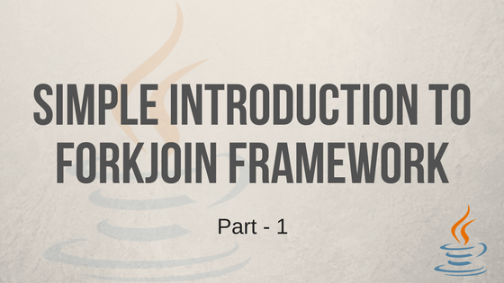

Simple Introduction to ForkJoin Framework - Part 1
Posted on May 03, 2018

ForkJoin framework allows us to execute tasks in a thread based environment. We need to pass tasks to this framework and this framework will execute them efficiently. This framework provides all the required utility classes which will handle all nitty-gritty things like maintaining the thread pool and running the tasks, we just need to pass the task to it. This framework in based on two main classes; ForkJoinPool and ForkJoinTask. Understanding these two classes is necessary to learn about this framework. In the below sections we will see how these classes works.
ForkJoinPool
ForkJoinPool maintains a pool of light weight threads. These light weight threads are special implementation of normal threads and they are available only in ForkJoin framework. These threads are light weight because it consumes less resources than comparing to normal threads and takes less resources in switching. Since they are the lighter weight so there will be less performance cost in maintaining these threads. This is one of the advantage using ForkJoinPool.
Each thread in the pool will have its own queue. This queue will gets filled with the tasks. For example, if we have two threads in the pool then each thread will have its own queue. Internally ForkJoinPool uses work-stealing algorithm. Using this algorithm, threads will first clean up there queue and if there are no more tasks left then it steals work from the queue of other threads. For example, if thread A completed its tasks in the queue then instead of waiting for the next task it will steal from thread B. ForkJoin framework is the best when we have processor intensive tasks because it keeps processor busy by not keeping threads idle.

Above image shows two threads. Thread B is not having tasks to execute so it is stealing tasks from Thread A’s queue.
ForkJoinTask
ForkJoinTask can be any task which can be divisible into subtasks. This division is called fork. This forking happens until the task is small enough to work on. For example, if a task is based on an array then we can configure threshold, so up to which an array can be forked.
Once the task is divided into small enough, then this subtask will sit in a waiting queue of any one of the thread in a pool to get executed.
Once the subtasks are executed, then the result of each subtasks are joined together. This joining goes until it reaches the first forked task where the join will produce the result of the main task.
This works like a divide and conquer problem. First the task is divided in to small enough to work and then all subtasks are joined back to get the result. Below image shows it in the detail;

In the above image, an array of twenty elements need to be processed. We configured threshold as five, so input array is forked until each sub-array get five elements. Each sub-array is passed to ForkJoinPool for execution. After the execution all sub-arrays are joined back to get result of fully processed array.
Below is the list of some examples which can be implemented using ForkJoinTask;
-
Sorting an array: If we divide an array we get sub-arrays. These sub-arrays can be sorted and then we can merge back to make whole array sorted.
-
Processing images: Images are two dimensional arrays. We can divide it into sub-arrays and then merge back to get the result.
ForkJoinTask is an abstract class so we can not directly use it, instead we can extend any of the three abstract classes which extends ForkJoinTask. Based on the type of the task we can extend any one of these three classes.

-
RecursiveAction: Works on the provided task but not returns any result.
-
RecursiveTask: Works on the provided task and returns the result.
-
CountedCompleter: While working on the input task it keep tracks of other threads and returns early if output is evaluated.
Conclusion
This article introduced internals of ForkJoinPool and ForkJoinTask classes. In the next part of this article I will show code examples. I will post next article soon.